Module Purpose
This source content explains Hinduism as an ancient and diverse religious tradition rooted in South Asia. It focuses on Brahman, atman, samsara, moksha, dharma, karma, sacred texts, puja, deities, avatars, yoga, festivals, pilgrimage, and Hindu life in Canada.
The goal is to understand how the terms connect. Hinduism is best studied as a living tradition where philosophy, devotion, family life, ritual, sacred geography, and community identity are woven together.
Learning Outcomes
- Explain why Hinduism is best understood as a diverse family of traditions rather than one simple creed.
- Describe Brahman and atman as major ideas about ultimate reality and the inner self.
- Explain how samsara, moksha, dharma, and karma connect moral life to spiritual liberation.
- Identify the importance of sacred texts such as the Vedas and later Hindu literature.
- Describe how devotion appears in puja, family worship, temple worship, festivals, pilgrimage, and sacred geography.
- Explain the religious significance of Vishnu, Shiva, avatars, yoga, gurus, and sacred symbols without relying on stereotypes.
- Connect Hindu practice to modern Canadian pluralism through temples, families, festivals, and community life.
- Use reliable sources to research a Hindu deity, avatar, symbol, festival, pilgrimage, or temple practice and produce a basic bibliography.
Chapter Sections
- Hinduism: The Illuminated Tapestry
- An Ancient and Irreducible Tradition
- The Cosmic Reality: Brahman and Atman
- The Journey of the Soul: Samsara and Moksha
- The Moral Engine: Dharma and Karma
- Sacred Authority: The Vedas and Sacred Texts
- Manifestations of the Sacred: Vishnu, Shiva, and Avatars
- Puja: Bringing Everyday Life into Contact with the Sacred
- Family Practice and Temple Practice
- The Depths of Yoga and the Role of the Guru
- The Sacred Calendar: Diwali and Holi
- Sacred Geography: Pilgrimage and the Ganges
- Unity in Diversity
- A Living Thread in Modern Canadian Pluralism
Chapter 4 Core Ideas
| Idea | Meaning |
|---|---|
| Ancient roots | Hinduism developed over thousands of years in South Asia and is connected to very old texts, rituals, and philosophies. |
| Diversity | Hinduism includes many traditions, communities, deities, texts, and paths. It is not one simple uniform creed. |
| Brahman and atman | Brahman means ultimate divine reality; atman means the inner self or soul. |
| Samsara and moksha | Samsara is the cycle of rebirth; moksha is liberation from that cycle. |
| Dharma and karma | Dharma is duty and right order; karma is moral cause and effect. |
| Sacred texts | The Vedas and other texts preserve teaching, ritual knowledge, religious memory, and authority. |
| Devotion and practice | Puja, home worship, temple worship, festivals, yoga, pilgrimage, and sacred geography all make belief visible in life. |
| Canadian pluralism | Hindu traditions are part of Canada through temples, festivals, families, community life, and public religious diversity. |
1. Hinduism: The Illuminated Tapestry
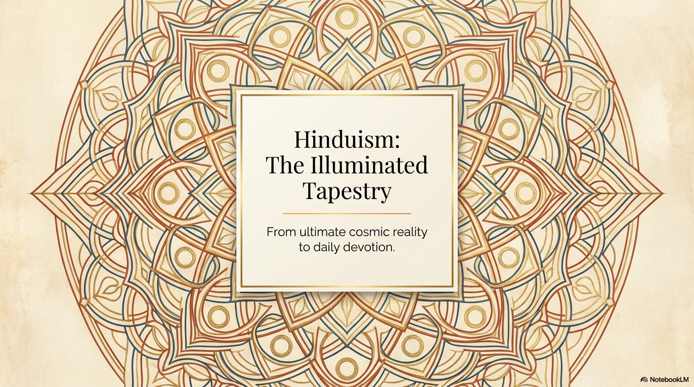
Hinduism is one of the world's oldest living religious traditions. It developed over thousands of years in South Asia and cannot be reduced to one founder, one creed, or one single institution. It is better understood as a broad religious and cultural family made up of many communities, philosophies, practices, texts, and devotional paths.
A useful starting point is to see Hinduism as a tapestry. A tapestry is made from many threads. In Hindu traditions, those threads include ideas about ultimate reality, the inner self, moral responsibility, rebirth, liberation, devotion, family practice, sacred geography, festivals, and community life. The threads are different, but they can still belong to one larger religious world.
Because Hindu traditions are diverse, careful language matters. Strong answers avoid saying that all Hindus believe or practice in exactly the same way. A better pattern is to say that many Hindus, some traditions, or particular communities understand a belief or practice in a certain way.
2. An Ancient and Irreducible Tradition
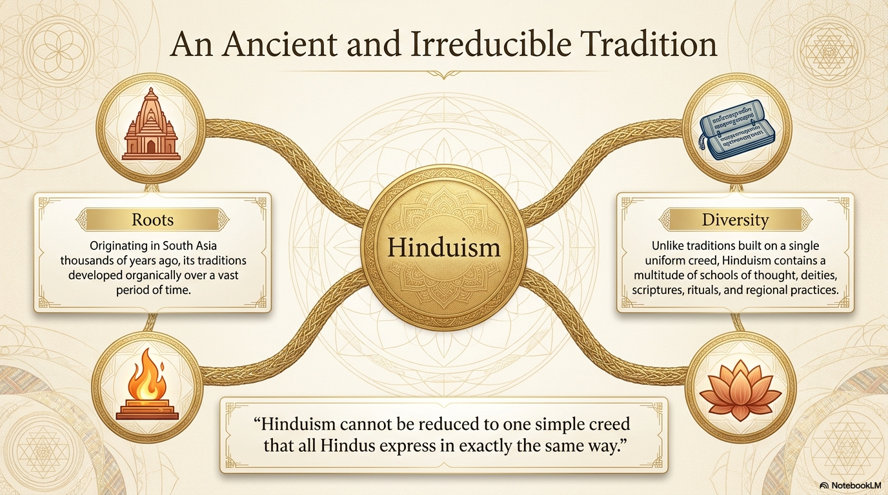
Hinduism is ancient because its roots reach back thousands of years in South Asia. Its development includes early sacred texts, ritual traditions, philosophical reflection, temple worship, family devotion, pilgrimage, festivals, and regional customs. There is no single moment when all of Hinduism began in the way that some religions begin with one founder or one central event.
Hinduism is diverse because it includes many schools of thought and many ways of practicing. Some Hindus emphasize devotion to a personal deity. Some emphasize meditation, knowledge, ritual, duty, or service. Some traditions focus especially on Vishnu, Shiva, Devi, or other forms of the sacred. Regional language, family custom, caste or community background, and local temples can also shape practice.
This diversity is not a weakness or a sign of confusion. It is one of Hinduism's defining features. A person can recognize common themes such as Brahman, atman, karma, dharma, samsara, moksha, sacred texts, devotion, and reverence for the sacred while still recognizing that Hindu life is not uniform.
3. The Cosmic Reality: Brahman and Atman
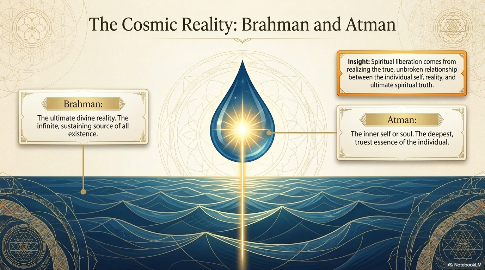
Brahman is a major concept in Hindu thought. It refers to ultimate divine reality, the deepest truth or sacred ground of existence. Brahman is not simply one object within the universe. It is often understood as the ultimate reality behind, within, and beyond all things.
Atman refers to the inner self, soul, or deepest spiritual essence of a person. In many Hindu philosophical traditions, spiritual growth involves understanding the true nature of atman and its relationship to Brahman. The question is not only what do I believe, but what is the deepest truth of who I am?
The relationship between Brahman and atman is central to many Hindu understandings of liberation. Some traditions emphasize that the deepest self is ultimately connected to or identical with the divine reality. Others express the relationship differently. The shared point is that spiritual life involves moving beyond shallow identity and recognizing a deeper sacred reality.
4. The Journey of the Soul: Samsara and Moksha
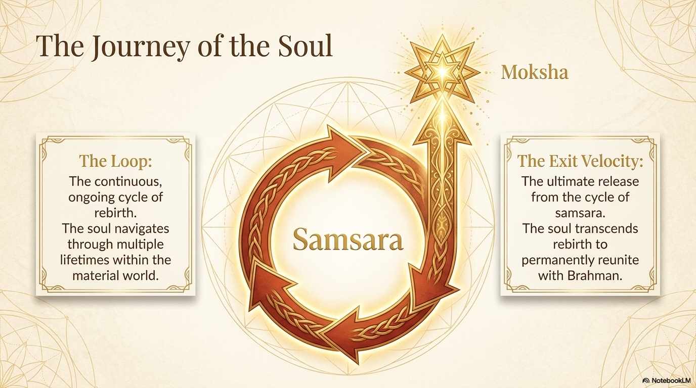
Samsara refers to the ongoing cycle of birth, death, and rebirth. Human life is not treated as a single isolated event. A person's actions, choices, and spiritual development are understood as part of a larger moral and spiritual journey.
Moksha means release or liberation from samsara. It is one of the highest spiritual goals in Hindu traditions. Moksha is not simply physical survival after death. It is freedom from the cycle of rebirth and from ignorance, attachment, and limited understanding.
The ideas of Brahman, atman, samsara, and moksha connect closely. A strong explanation shows how the soul or deepest self journeys through rebirth and how liberation involves realizing spiritual truth, overcoming ignorance, and moving toward union with or closeness to ultimate reality.
5. The Moral Engine: Dharma and Karma
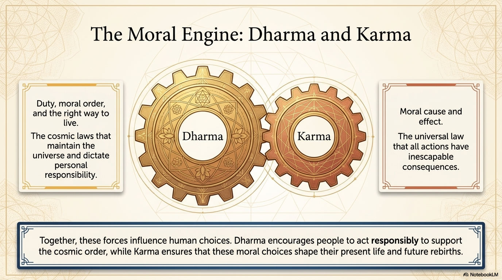
Dharma refers to duty, right order, moral responsibility, and the proper way to live. It can include responsibilities connected to family, community, stage of life, religious practice, and ethical conduct. Dharma helps people think about how to live in a way that supports moral and cosmic order.
Karma means moral cause and effect. Actions matter because they shape consequences. Karma is not random luck and it is not simply punishment. It is the principle that choices have moral weight and help shape present and future experience.
Together, dharma and karma encourage responsible action. Dharma asks what a person ought to do; karma reminds the person that actions have consequences. These ideas can influence everyday choices: honesty, self-control, compassion, non-harm, service, devotion, respect for family, and responsibility to community.
6. Sacred Authority: The Vedas and Sacred Texts
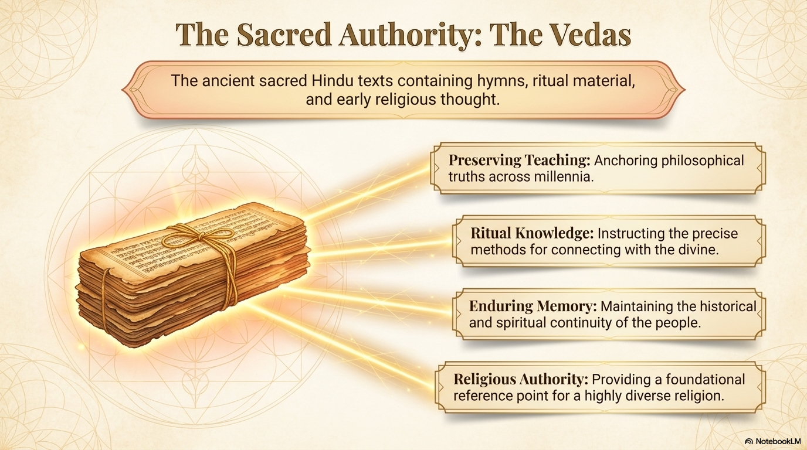
The Vedas are ancient sacred Hindu texts. They contain hymns, ritual material, and early religious teachings. Their importance is not only historical. They help preserve religious memory, ritual knowledge, and sacred authority within Hindu traditions.
Sacred texts matter because they give communities a way to remember, teach, interpret, and transmit tradition. In Hinduism, sacred literature is broad. Along with the Vedas, many Hindus also draw on texts and stories such as the Upanishads, the Bhagavad Gita, the Ramayana, the Mahabharata, Puranas, devotional poetry, and local traditions.
A strong answer does not need to list every text. The key point is that sacred texts preserve teachings and connect present-day practice to a long religious past. They help shape ritual, philosophy, devotion, ethical reflection, and family or community identity.
7. Manifestations of the Sacred: Vishnu, Shiva, and Avatars
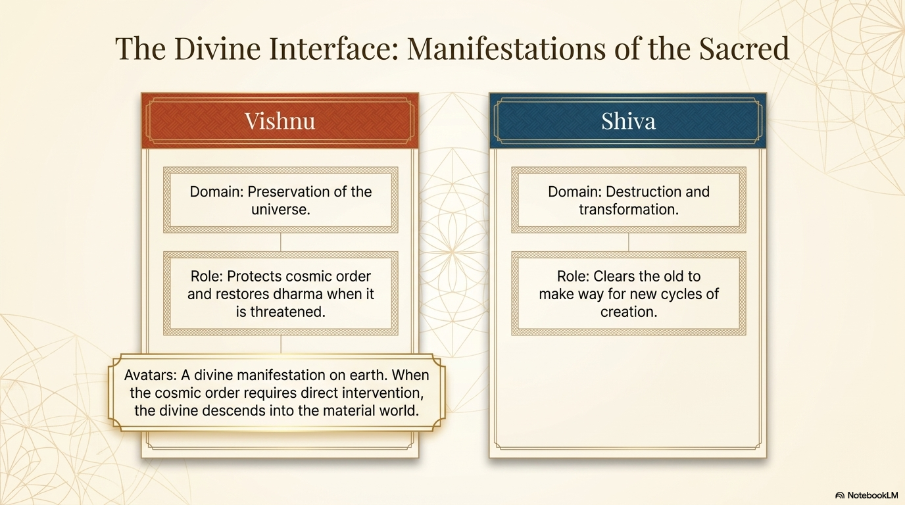
Hindu traditions include devotion to many deities and forms of the sacred. This does not mean Hinduism is simply a collection of unrelated gods. Many Hindus understand different deities as distinct manifestations, expressions, or approaches to a deeper divine reality.
Vishnu is commonly associated with preservation and protection of cosmic order. In many traditions, Vishnu appears through avatars, divine manifestations on earth, when dharma needs to be restored. Rama and Krishna are two well-known avatars of Vishnu.
Shiva is commonly associated with destruction and transformation. Destruction here should not be misunderstood as meaningless violence. In religious context, it can mean the clearing away of what is worn out, false, or spiritually limiting so renewal and transformation can occur.
8. Puja: Bringing Everyday Life into Contact with the Sacred

Puja is an act of devotional worship. It may happen in a home shrine, a temple, or another sacred setting. Puja often includes prayers, offerings, lamps, incense, flowers, food, water, bells, gestures, and reverence before a deity or sacred image.
The purpose of puja is not only to complete a ritual task. It brings everyday life into contact with the sacred. A devotee may express gratitude, devotion, respect, dependence, hope, or love. The act of offering something ordinary can become a way of recognizing the divine.
Sacred images or murtis are not simply decorative objects. In many Hindu contexts, they are treated as meaningful forms through which worshippers focus devotion and encounter the presence of the deity. Careful language avoids dismissing puja as worship of a statue; that phrasing misses the devotional meaning of the practice.
9. Family Practice and Temple Practice
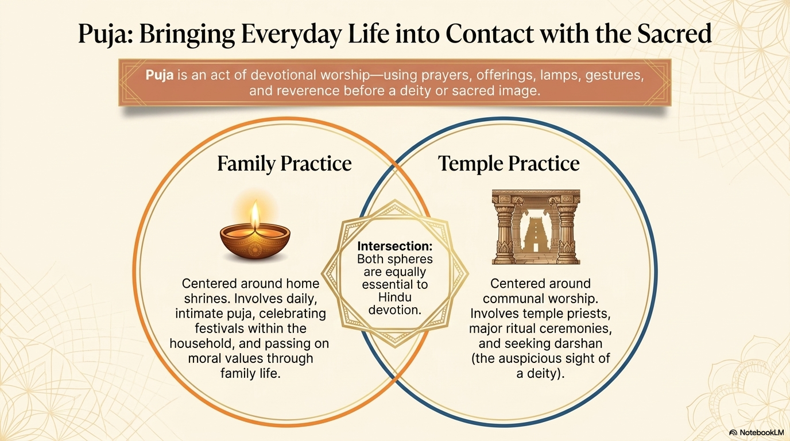
Family practice often centers around the home. A home shrine may include images or murtis of deities, lamps, incense, flowers, and offerings. Daily or regular puja can teach children reverence, gratitude, self-discipline, respect for family traditions, and moral responsibility.
Temple practice adds a communal dimension. Temples are places where devotees gather for worship, festivals, teaching, priest-led rituals, music, and darshan, the auspicious sight of a deity. A temple can also be a social and cultural center where language, tradition, community support, and religious identity are maintained.
Home worship and temple worship should not be treated as competitors. Both are important because Hindu devotion is not limited to a weekly public service. It can be woven through daily life, family relationships, community gatherings, and major ritual occasions.
10. The Depths of Yoga and the Role of the Guru
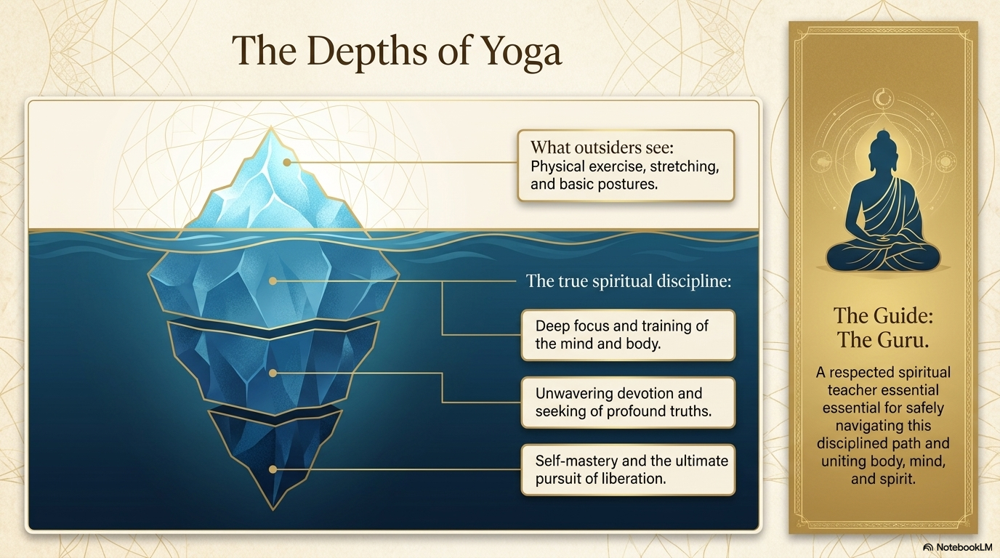
In many modern settings, yoga is treated mainly as exercise, stretching, or posture practice. That is only the visible surface. In Hindu traditions, yoga can mean a disciplined spiritual path that trains the body, mind, and spirit. It can include meditation, devotion, ethical practice, concentration, self-mastery, and the pursuit of liberation.
The deeper purpose of yoga is to move beyond distraction and shallow self-understanding. It can help a person develop focus, discipline, devotion, awareness of spiritual truth, and control over habits that keep the person attached to ignorance or ego.
A guru is a respected spiritual teacher or guide. A guru helps students navigate spiritual discipline, interpret teachings, avoid confusion, and grow toward wisdom. In this context, the teacher is not just an instructor of technique but a guide into a disciplined way of life.
11. The Sacred Calendar: Diwali and Holi
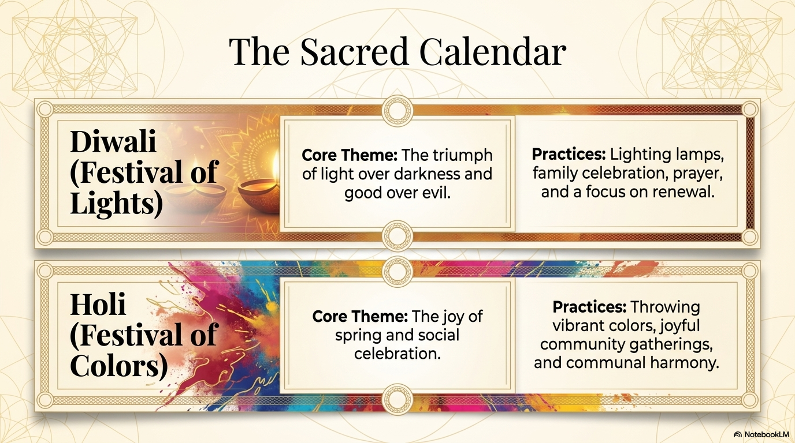
Diwali is often known as the Festival of Lights. Its core themes include the triumph of light over darkness and good over evil. Practices often include lighting lamps, family celebration, prayer, gifts, new clothing, sweets, and a focus on renewal. In different communities, Diwali may be connected with Lakshmi, Vishnu, Rama, Sita, Krishna, or other sacred stories and forms of devotion.
Holi is especially associated with color, spring, joy, and social celebration. It often includes throwing colored powder or colored water, gathering with friends and family, sharing sweets, and celebrating community. Holi can also be connected to stories of good overcoming destructive pride or evil.
Festivals matter because they turn belief into public and family practice. They teach stories, renew community bonds, express devotion, and make religious identity visible. In Canada, public festival celebrations can also help non-Hindu neighbors understand Hindu traditions beyond stereotypes.
12. Sacred Geography: Pilgrimage and the Ganges
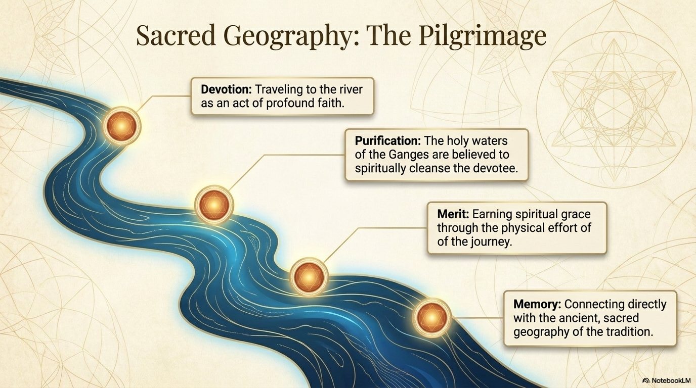
Pilgrimage is religious travel to a sacred place. In Hindu life, pilgrimage can be an act of profound devotion. The physical effort of the journey can become part of the religious meaning because the devotee is not only visiting a location but entering sacred geography.
The Ganges is regarded by many Hindus as a sacred river. Its waters are often understood as spiritually purifying. Bathing, visiting, or performing rituals connected to the Ganges can express devotion, seek purification, earn religious merit, and connect a person to the ancient geography of the tradition.
Sacred geography matters because religion is not only a set of ideas. Places, rivers, temples, cities, mountains, and pilgrimage routes can hold memory and meaning. They connect present-day devotees with stories, ancestors, ritual practice, and the long history of Hindu life.
13. Unity in Diversity
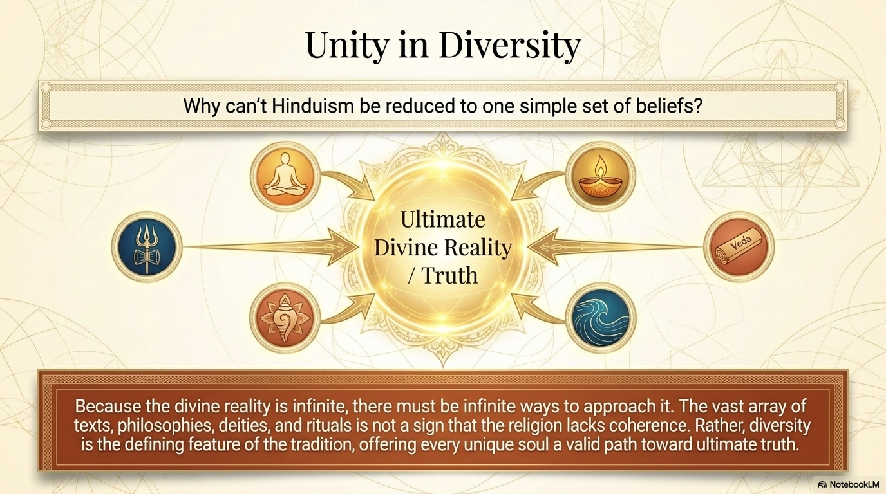
Hinduism cannot be reduced to one simple set of beliefs because it contains many texts, philosophies, forms of worship, rituals, regional practices, deities, and understandings of the divine. This diversity is not a sign that Hinduism is incoherent. It is one of the defining features of the tradition.
The idea behind this diversity is that ultimate divine reality is too vast to be captured by one image, one practice, or one explanation. Different souls, communities, and families may approach the sacred through different paths. Some emphasize devotion, some emphasize knowledge, some emphasize ritual, some emphasize meditation, and some emphasize service or duty.
At the same time, there are recognizable threads that connect Hindu traditions: Brahman, atman, karma, dharma, samsara, moksha, sacred texts, devotion, family practice, and reverence for the sacred. A strong explanation holds unity and diversity together.
14. A Living Thread in Modern Canadian Pluralism
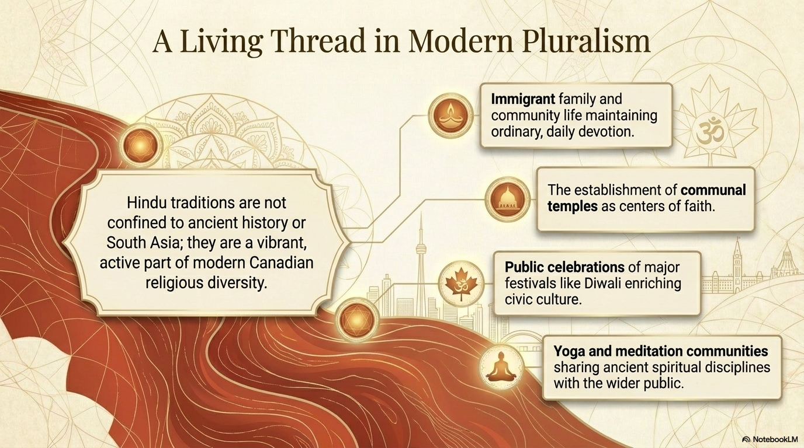
Hindu traditions are not only ancient history. They are lived today by families and communities around the world, including in Canada. Immigration, family life, community organizations, temples, festivals, and yoga or meditation communities have made Hindu traditions visible within Canadian religious pluralism.
Canadian examples can include Hindu temples, Diwali celebrations, Holi gatherings, family puja, language and cultural programs, youth education, vegetarian or festival food traditions, and community service connected to temples or cultural associations.
A strong Canadian example explains more than visibility. It shows how a practice helps preserve religious identity, build community, educate others, and contribute to a pluralistic society where multiple religious traditions can be practiced openly.
Researching Hindu Deities, Avatars, Symbols, Festivals, and Practices
When researching a Hindu deity, avatar, symbol, festival, pilgrimage, or temple practice, begin by identifying exactly what you are studying. Avoid broad topics that are too large, such as all Hindu gods or all festivals. Stronger choices are specific: Vishnu, Shiva, Krishna, Rama, Lakshmi, Ganesha, Om, lotus, murti, Diwali, Holi, puja, darshan, the Ganges, or a particular temple practice.
Then explain what the practice or symbol means inside Hindu tradition. Describe how it is used, what beliefs or values it communicates, and how it connects to larger ideas such as dharma, karma, devotion, purification, family life, community, sacred geography, or ultimate reality.
Use reliable sources. Better sources include museum or university resources, reputable encyclopedias, religious studies textbooks, temple or Hindu community pages, and sources written or reviewed by people knowledgeable about Hindu traditions. Weak sources include random blogs, unsourced social media posts, AI-generated pages, or websites that treat Hindu practice as exotic entertainment.
Symbols, Practices, and Common Misunderstandings
Symbols and practices are often misunderstood when outsiders interpret them without context. For example, a murti may be dismissed as an idol or statue, but in many Hindu contexts it is a sacred form through which a devotee focuses worship and encounters divine presence. The better correction is to explain the religious meaning of image, presence, devotion, and reverence.
Om is often used as a sacred sound or symbol connected to ultimate reality, meditation, and the spiritual depth of the universe. A lotus often represents purity, beauty, spiritual growth, and the ability to rise above muddy surroundings. Some Hindu symbols have long histories and should not be interpreted only through modern Western assumptions.
When explaining a misunderstanding, name the error clearly and then correct it with respectful context. A strong answer might say: outsiders sometimes think puja is only the worship of an object. A better explanation is that the object functions as a sacred focus for devotion, presence, offering, and relationship with the divine.
Bibliography and Source Use
A bibliography should include at least the title of the source, the author or organization when available, the website or publisher, and access information if your teacher requires it. For a web source, include the page title, site or organization, publication or update date if listed, URL, and the date you accessed it.
Do not use sources only to copy sentences. Use them to build understanding. Read, take notes in your own words, compare more than one source, and check whether the source is describing a specific Hindu community or making a broad claim about all Hindus.
A simple research response should do five things: identify the topic, describe what happens or what it means, explain the beliefs or values expressed, correct a common misunderstanding or connect it to Canadian understanding, and list the sources used.
Chapter 4 Glossary
| Term | Meaning |
|---|---|
| Hinduism | A broad family of religious traditions rooted in South Asia and shaped by many texts, practices, philosophies, deities, and communities. |
| Brahman | Ultimate divine reality; the deepest sacred reality behind, within, and beyond existence. |
| Atman | The inner self, soul, or deepest spiritual essence. |
| Samsara | The cycle of birth, death, and rebirth. |
| Moksha | Liberation or release from samsara. |
| Dharma | Duty, right order, moral responsibility, and the proper way to live. |
| Karma | Moral cause and effect; actions have consequences. |
| Vedas | Ancient sacred Hindu texts containing hymns, ritual material, and early religious thought. |
| Puja | Devotional worship using prayers, offerings, lamps, gestures, and reverence. |
| Murti | A sacred image or form used in worship and devotion. |
| Vishnu | A deity often associated with preservation and protection of cosmic order. |
| Shiva | A deity often associated with destruction, transformation, renewal, and spiritual power. |
| Avatar | A divine manifestation on earth, often connected with Vishnu. |
| Guru | A respected spiritual teacher or guide. |
| Yoga | A disciplined path that can unite body, mind, ethics, devotion, meditation, and spiritual practice. |
| Diwali | A major festival often known as the Festival of Lights. |
| Holi | A festival associated with color, spring, joy, and community celebration. |
| Ganges | A river regarded as sacred by many Hindus and associated with purification and pilgrimage. |
| Pilgrimage | Religious travel to a sacred place. |
| Pluralism | A society or setting where multiple religious traditions are present and practiced. |